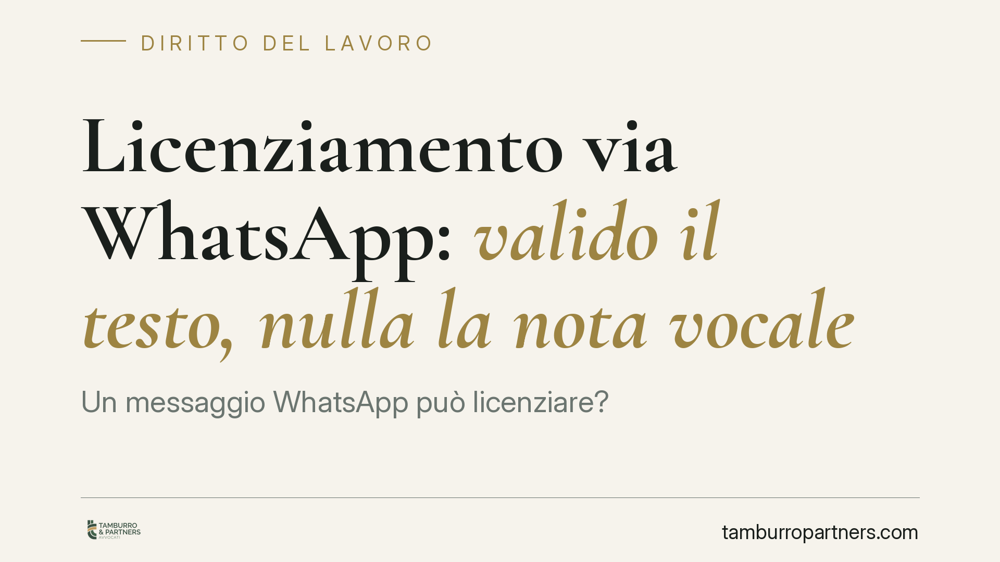

Licenziamento via WhatsApp: valido il testo, nulla la nota vocale
Un messaggio WhatsApp può licenziare? La giurisprudenza di merito distingue: il testo scritto, se se ne prova la ricezione, può rispettare la forma prescritta; la nota vocale no, perché manca la forma scritta imposta dalla legge. La differenza non è formale: incide sulla nullità dell'atto e sulle tutele spettanti al lavoratore.

Il caso e la distinzione centrale
La questione ruota attorno a un principio semplice: il licenziamento deve essere comunicato per iscritto. Da qui la differenza netta tra due strumenti che il linguaggio comune tende a confondere.
Il messaggio scritto inviato via WhatsApp può soddisfare il requisito della forma scritta, a condizione che ne sia provata la ricezione da parte del lavoratore. La nota vocale, invece, non integra la forma scritta: si tratta di una comunicazione orale registrata e, come tale, è affetta da nullità.
Su questa linea si collocano diverse pronunce di merito, tra cui quelle richiamate dei Tribunali di Napoli Nord, Brindisi e Grosseto. È bene precisarlo subito: si parla di giurisprudenza di merito, non uniforme. Non esiste, allo stato, un principio consolidato della Corte di Cassazione che chiuda la questione. Le soluzioni possono quindi variare da un ufficio giudiziario all'altro.
Inquadramento normativo
La forma scritta del licenziamento è prescritta dall'art. 2 della L. 604/1966, che la impone a pena di nullità. La stessa forma vale per i licenziamenti disciplinari e per il recesso per giusta causa ex art. 2119 c.c. Il difetto di forma scritta non è una mera irregolarità: rende l'atto radicalmente nullo.
Le conseguenze sanzionatorie dipendono dalla data di assunzione del lavoratore, punto spesso trascurato.
Per i rapporti sorti prima del 7 marzo 2015, il licenziamento nullo o orale rientra nell'art. 18, comma 1, della L. 300/1970 (nel testo riformato dalla L. 92/2012, cosiddetta Riforma Fornero), che prevede la tutela reintegratoria piena: reintegra nel posto di lavoro e risarcimento.
Per i rapporti sorti dal 7 marzo 2015, si applica il regime del contratto a tutele crescenti. L'art. 2 del D.Lgs. 23/2015 disciplina il licenziamento nullo o intimato in forma orale, prevedendo anch'esso la tutela reintegratoria piena. In entrambi i regimi, dunque, il difetto di forma scritta conduce alla reintegra.
Implicazioni pratiche
Per il datore di lavoro, affidarsi a una nota vocale espone a un rischio elevato: un licenziamento nullo, con obbligo di reintegra e pagamento delle retribuzioni maturate. Anche il messaggio scritto, pur potenzialmente valido sul piano della forma, apre un fronte probatorio delicato.
La prova della ricezione è centrale. Le due spunte blu di WhatsApp non sono di per sé sufficienti a dimostrare che il destinatario abbia effettivamente preso conoscenza del contenuto: possono essere disattivate, possono riferirsi a un apparecchio usato da terzi, possono essere contestate. La forma digitale, insomma, sposta il problema dalla validità dell'atto alla dimostrazione della sua avvenuta comunicazione.
Per il lavoratore, ricevere un licenziamento tramite messaggistica non significa dover subire passivamente l'atto. Occorre però muoversi nei termini perentori previsti dalla legge.
L'art. 6 della L. 604/1966 fissa un doppio termine:
- 60 giorni dalla ricezione del licenziamento per l'impugnazione stragiudiziale (anche con semplice comunicazione scritta idonea a manifestare la volontà di contestare);
- 180 giorni dall'impugnazione stragiudiziale per il deposito del ricorso giudiziale o, in alternativa, per la richiesta del tentativo di conciliazione o arbitrato.
La mancata osservanza di questi termini comporta la decadenza dall'azione.
Cosa fare in concreto
Per il datore di lavoro:
- Comunicare sempre il licenziamento in forma scritta tradizionale o digitale strutturata, mai con nota vocale.
- Conservare prova documentale certa dell'invio e della ricezione, non affidandosi alle sole spunte di lettura.
- Verificare quale regime sanzionatorio si applica al singolo rapporto, in base alla data di assunzione.
Per il lavoratore:
- Annotare data e modalità esatte con cui è stato comunicato il recesso e conservare i messaggi ricevuti.
- Attivarsi entro i 60 giorni per l'impugnazione stragiudiziale e monitorare il successivo termine di 180 giorni.
La qualificazione dell'atto e l'individuazione della tutela dipendono dal contesto documentale e temporale del singolo rapporto: la valutazione richiede l'analisi puntuale di questi elementi.
---
*Contributo informativo a cura di Tamburro & Partners - Avv. Giuseppe Tamburro. Non costituisce parere legale.*
Ogni storia di lavoro ha i suoi tempi.
Se gestisci HR e vuoi un confronto su contenzioso, ispezioni o licenziamenti, scrivi allo studio. Ti rispondiamo entro un giorno lavorativo.